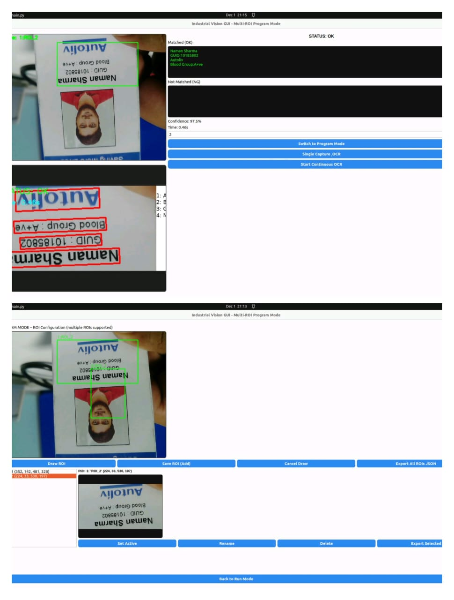
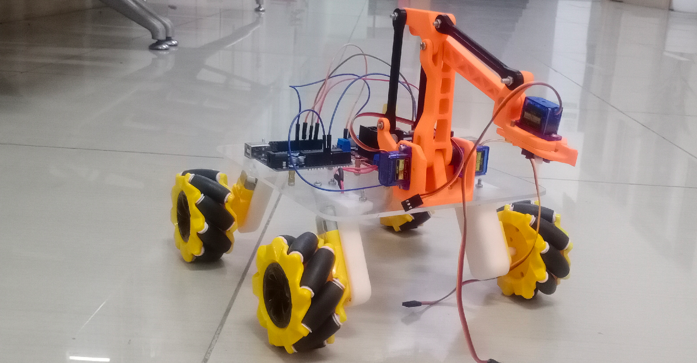

Vision Inspection & Robotics Systems
Status: Portfolio documents academic projects and ongoing industrial learning. Some systems are prototypes or simulators.
Why Vision Systems Fail in Factories
Real production environments introduce glare, vibration, inconsistent positioning, and strict timing. Vision pipelines that work in labs often collapse without deterministic logic.
System Architecture
Camera Capture
ROI Locking
OCR / Vision
OK / NG Logic
Traceability
OCR-Based Vision Inspection
Offline OCR inspection with ROI locking and confidence logic.
Tools: PaddleOCR · OpenCV · Jetson


Custom Robotic Arm
Mechanical assembly, servo control, and calibration.

